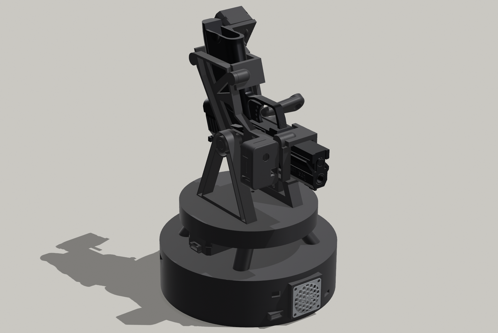
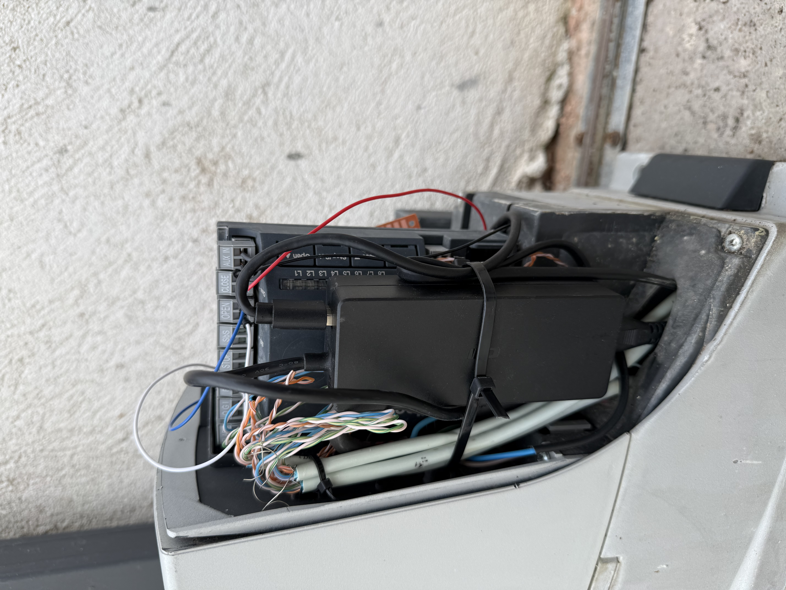
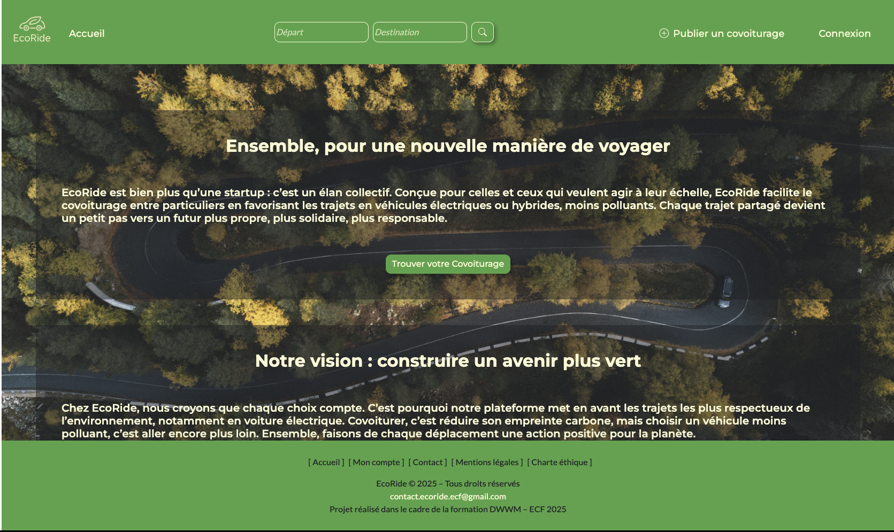
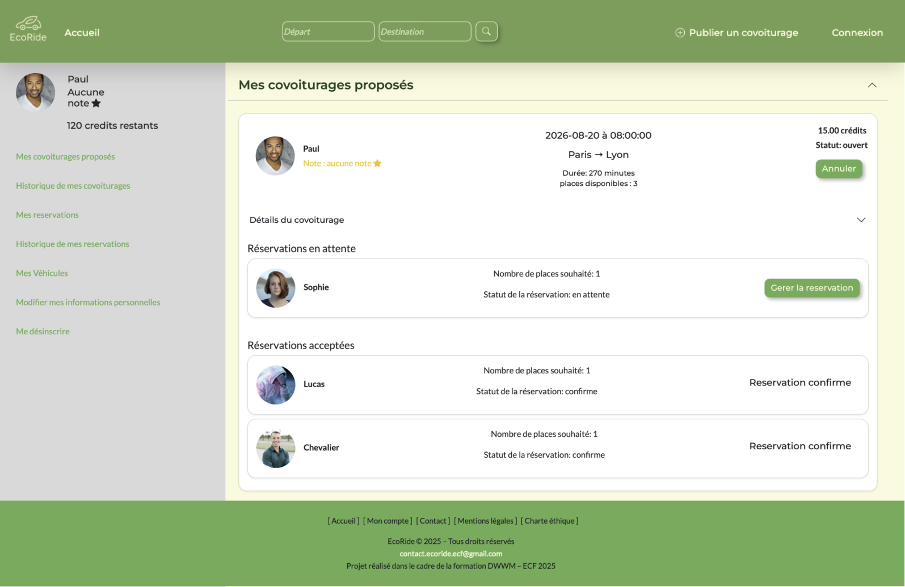
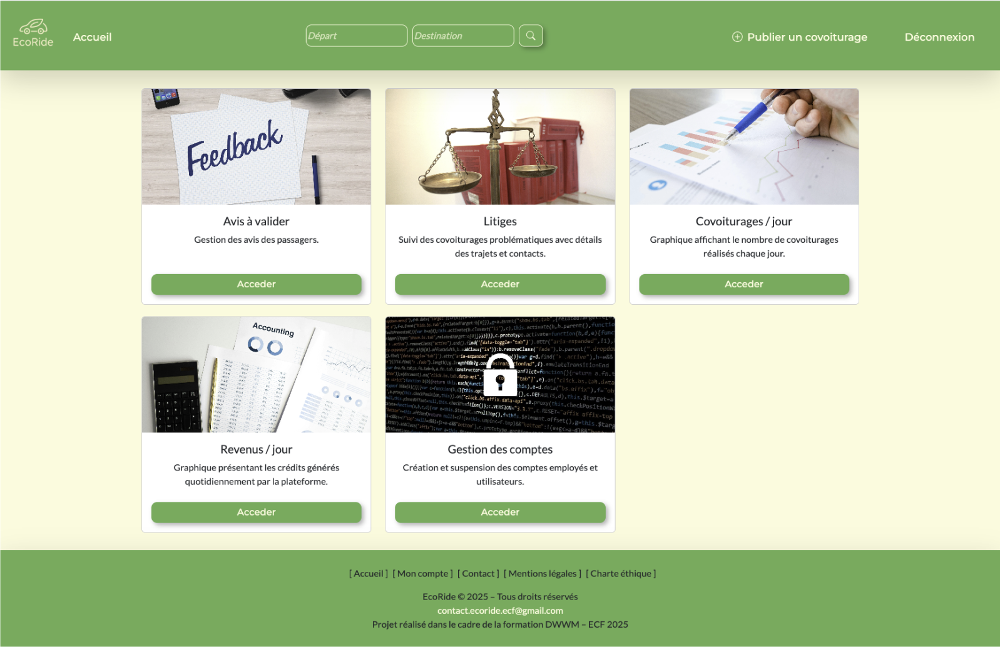
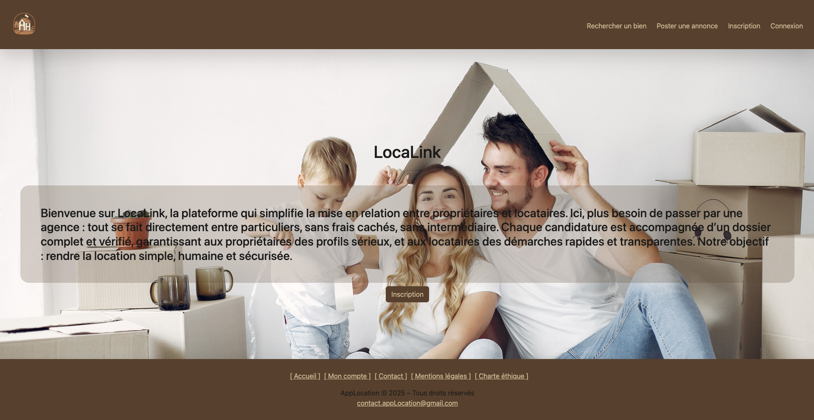
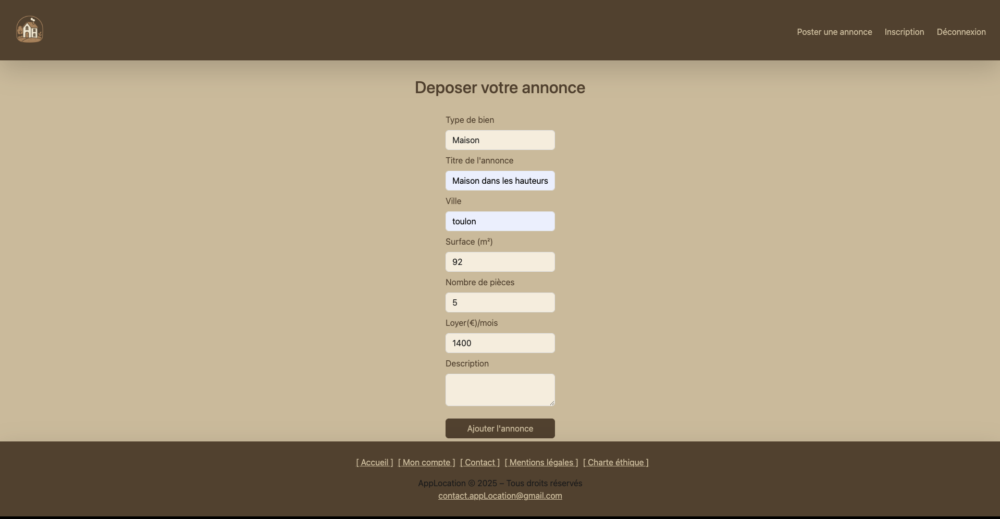

Plateforme robotique duale ESP32 avec firmware C++ non-bloquant, contrôle de moteurs pas à pas via DRV8825/MCP23017, architecture distribuée temps réel / vidéo et interface web embarquée.



Contrôleur de portail connecté basé sur ESP32 et HomeKit (HomeSpan), avec isolation par optocoupleur pour une intégration sécurisée avec un système Nice Robus.

Application web complète de covoiturage écologique. SPA vanilla JS, backend PHP MVC custom, authentification JWT, architecture dual MySQL/MongoDB, déploiement Docker / Vercel / Heroku.



Application de gestion de location en architecture microservices — API Gateway Node.js, services Symfony (auth + core), frontend React.

